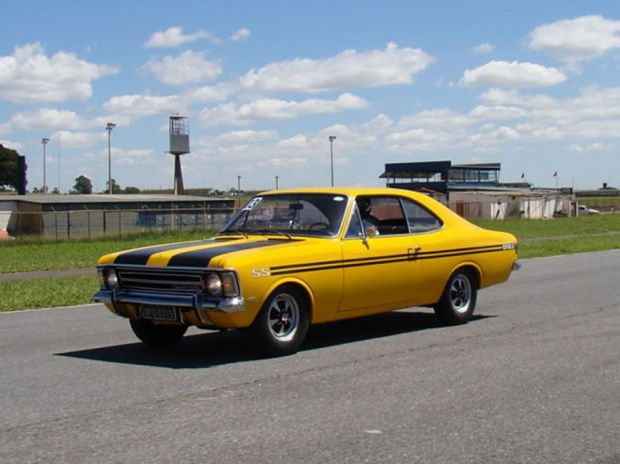
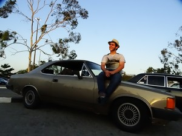
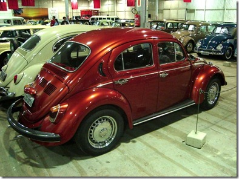
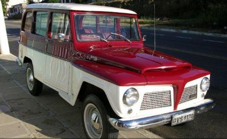
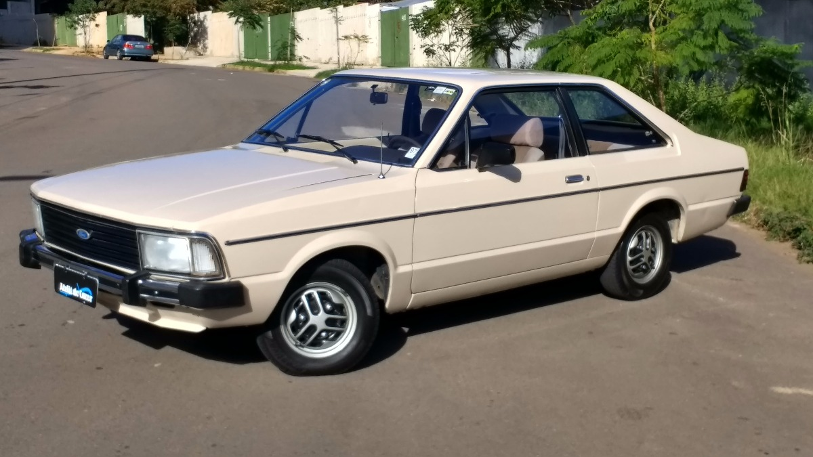
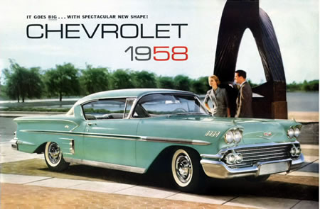

Noticias
| Opala | Comodoro |
|---|---|
|

O Opala já foi carro de presidentes e altos executivos e por muitos anos era sinônimo de alto luxo no Brasil. Tinha alcunhas imponentes, como Gran Luxo, Diplomata e Comodoro, e chegou a ser o veículo mais caro do mercado nacional. Também já mostrou sua potência em corridas de Stock Car e foi o veículo envolvido em um episódio marcante da história do país, o acidente que matou o ex-presidente Juscelino Kubitschek. |

Praticamente um Opala com outro nome, ele mantinha a receita de projeto alemão e mecânica americana, mas tinha sua própria identidade graças ao luxo que o distinguia do irmão mais simples. A pintura metálica era exclusiva, o teto era sempre revestido de vinil (inteiriço no sedã e em parte no cupê) e o aço inox predominava nos frisos e sobrearos. |
| Fusca | Rural |
|

O Fusca, um dos carros mais famosos de todos os tempos, foi construído na Alemanha. Os primeiros protótipos começaram a surgir por volta de 1933, por Ferdinand Porsche, o criador do projeto, que na época não tinha dinheiro para produzir o carro em massa |

Quando iniciou a produção da Rural no Brasil, em 1958, a Willys Overland nem deveria suspeitar que, alguns anos mais tarde, ela seria vendida à Ford e sumiria do mapa. Sua presença na terra, porém, está garantida pelo legado dos veículos que ela deixou, como uma Ford Rural 1972 com apenas 66.409 km no hodômetro. |
| Corcel II | Impala |
|

No final de 1977 chegava às ruas o novo modelo: o Corcel II. A carroceria era totalmente nova, com linhas mais retas, modernas e bonitas. Os faróis e as lanternas traseiras, seguindo uma tendência da época, eram retangulares e envolventes. A grade possuía desenho aerodinâmico das lâminas, em que a entrada de ar era mais intensa em baixas velocidades que em altas. O novo carro parecia maior, mas não era. |

O Impala veio para ser a opção TOP da Chevrolet, acima do então chamado e iconizado, Bel Air. A linha do 1958 havia sido transformada criando um aspecto mais esportivo e com mais curvas que seu predecessor. Os modelos Bel Air Impala possuiam acabamento especial, cromeados especiais e preço, obviamente mais alto. |